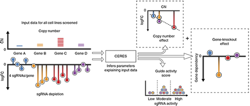

Project Achilles
Project Achilles is creating a catalog of essential genes
Achilles systematically identifies and catalogs gene essentiality across hundreds of genomically characterized cancer cell lines. We use genome-scale RNAi and, more recently, CRISPR-Cas9 genetic perturbation reagents to silence or knockout individual genes and identify those genes that affect cell survival. By linking these dependencies to the genetic or molecular features of the tumors, this project is providing the foundation for the
"Cancer Dependency Map”.
Highly standardized pooled genome-scale LOF screens
We use lentiviral-based pooled RNAi or CRISPR/Cas9 libraries in genome-scaled pooled loss-of-function (LOF) screening. This allows for the stable suppression of each gene individually in a subset of cells within a pooled format allowing for a cost-effective genome scale interrogation of gene essentiality. We developed a highly standardized parallel screening workflow able to handle a large number of screens and ensure that the data across cell lines are comparable. Rigorous quality controls, including multiple cell line fingerprinting steps and monitoring of cell/reagent representation throughout the screening process are performed to ensure the quality of the data.
Computational Modeling for more accurate determination of gene essentiality
We have developed methods (DEMETER for RNAi screening, CERES for CRISPR screening) to computationally infer and subtract seed effects that arise for each shRNA. The resulting dataset is highly reliable and ready to be explored.

Schematic of the CERES computational model. CERES models the depletion values as a sum of gene-knockout and copy number effects, multiplied by a guide activity score parameter. CERES then outputs the values of the parameters that produce the highest likelihood of the observed data under the model.
Quarterly releases of data
Project Achilles is an ongoing effort aimed at screening more than 2000 cell lines of a variety of lineages in the next 5 years, including cell lines derived from both solid and hematopoietic tumors of pediatric and adult lineages. We are committed to making the Achilles data a resource for the scientific community. For unrestricted use of the latest datasets available please visit
our data page. Additional data is being generated and will be released on a quarterly basis pre-publication.
Legacy Datasets
As we update our computational methods to process the data, we will replace the older datasets with the latest versions. However, previously published but not currently used datasets are still stored on this portal.